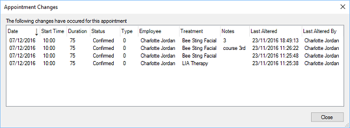

Appointment Changes
Previous
Top
Next
All changes to an appointment by staff are logged and viewable if the user has permission to view appointment history.

The above form shows what and who made changes and on what date and time.